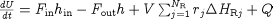

gPROMS initialisation procedures allow the model developer to specify a set of Parameter values that will guarantee successful initialisation. From this solution of the simplified problem the Parameter values are replaced with the desired ones in such a way that the model will always initialise. As an example, consider a lumped model of a CSTR in which the following energy balance occurs.

The heats of reaction, , are Parameters to be specified by the Model user. Users may want to model highly energetic reactions, so that some of these Parameters will take very large values and in some cases these can cause difficulty or even failure during initialisation.
gPROMS Initialisation Procedures allow the Model developer to specify a set of Parameter values that will be used to initialise the Model first and then to change these values back to the user-specified ones in a controlled manner so that the initialisation converges even for extreme values of the Parameters. In the above example, the first step of the Initialisation Procedure might be to set all values of to zero and solve the initialisation problem. Upon successful initialisation, the Parameters are gradually1By default, gPROMS applies a continuation method when reverting Parameters (and any other changes in the Initialisation Procedure) to the values specified in the Process: that is, their values are changed continuously and smoothly rather than in one discrete jump. returned to the user-specified values.
If the Parameter is defined in the gPROMS Model by:
PARAMETER ... EnthalpyOfReaction AS ARRAY(NoReac) OF REAL ...
Then the Initialisation Procedure would be defined by:
# end of EQUATION section
INITIALISATION_PROCEDURE IP_NoHeatOfReaction
START
EnthalplyOfReaction := 0 ;
END
NEXT
MOVE_TO
REVERT EnthalpyOfReaction ;
END
END
END
In other words, first solve the initialisation with EnthalpyOfReaction set to zero; then, once successful, gradually change all of their values back to those specified in the Process.